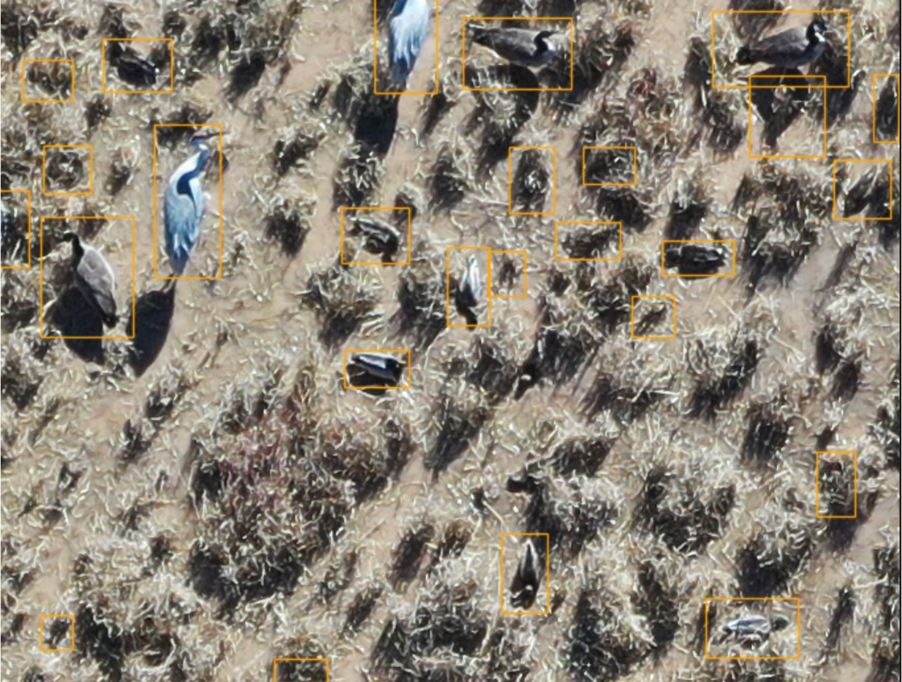

Drones for Ducks

Automating waterfowl census with UAS and deep learning
In 2020, I became the project manager for a US Fish and Wildlife cooperative agreement to reduce human effort in conducting annual waterfowl census at wildlife refuges in the southwest by using UAS for field surveys and deep learning for automated image processing. UAS imaging was conducted at waterfowl management areas throughout central New Mexico from 2018 - 2021, collecting >5,000 images. Fifteen US Fish and Wildlife biologists labeled 13 representative images to the species level to create a benchmark set of image labels for training and evaluation. A semi-random subsample of images was uploaded initially to the Labelbox platform for labeling by volunteers to create a larger training dataset. I migrated the volunteer image labeling project to the Zooniverse participatory science platform and transitioned to labeling by morphology (duck/goose/crane). I also worked with web developers to create a gameification portal to encourage volunteer participation and a data upload portal for wildlife managers to have their waterfowl imagery automatically labeled using our beta deep learning pipeline. We are in the process of optimizing our deep learning pipeline for the automated detection and identification of ducks, geese, and cranes in UAS imagery and preparing it for deployment during the annual waterfowl population census.
Research Questions
- How much variance exists in human labeling effort of UAS imagery? Is this difference significant between experts and volunteers?
- How valuable is transfer learning in the context of a large, participatory science training dataset?
- Does animal movement bias counts derived from UAS imagery?